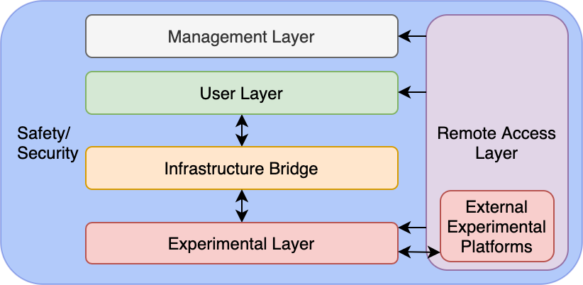

This document presents the shared resources for our publication "ICS Testbed Tetris: Practical Building Blocks Towards a Cyber Security Resource" categorised per layer and per element.
If you would like to contribute to the development of this shared resource, please email us at tide-ssg@lancaster.ac.uk.
The Management Layer acts as central point from which oversight of a testbed can be established. This includes general functionality, from server management to network management, but extends to include the safety and security wraparound. Experimental instantiation is partially covered by this layer. For example, management access to a hypervisor can be used to deploy virtual machines within the Experimental Layer as per experimental design requirements. If deployed in isolation from other layers as per our model, a clear demarcation between usable infrastructure and operational oversight can be established, meaning management activities are undertaken in complete isolation from experimental activities. However, this may not be practical in smaller deployments.
User access control is available through Microsoft Active Directory [42] and Zentyal [178].
A common protocol used for these platforms is LDAP [177, 164, 26].
CPNI provides guidance for physical access control [39].
Virtualization solutions are available for computational resource management including vSphere (ESXI) [170], Hyper-V [89], and OpenStack [108] with centralised management [167] and APIs [169].
Non-virtualized environments may use remote system-level access such as RDP [91] or SSH [92].
Network architecture broader server and infrastructure monitoring tools such as Splunk [151] can be deployed.
Network devices can be accessed using an IP to console server [105].
VLANs are recommended [168].
A centralised switch allows centralisation, support of SDN [84], and mirror data feeds [27].
Networks can be simulated with software such as Packet Tracer [30].
Monitoring tools such as Nagios [99] and Splunk [152] may provide value.
External connectivity can be managed with structured static routing [29], access control lists [31], and intrusion detection/prevention (IDS/IPS) [20].
Basic electrical safety training [155], following wiring recommendations including power separation [50, 126], and encasing all live equipment in suitable panels [153] is recommended.
Real-world out-of-loop safety systems could be used. [119, 120].
Additional formal guidance is available in standards including ISO 62061 [16], IEC 13849-1 [17] and IEC 61508 [15].
See SOC section.
The User Layer presents an opportunity to centralize and manage a set of resources, which testbed users may require to support experimental design, and to capture and analyze experimental data. The functionality of this layer can be viewed as the management of experimental tooling and systems with visibility over/access to the Experimental Layer. Therefore, experimental instantiation and execution are also supported by this layer through access into the Experimental Layer via the Infrastructure Bridge. For example, this could include accessing Experimental Layer devices, configuring them as per experimental Design requirements, then enabling (executing) their operation. This may take many forms, particularly in smaller deployments.
The Kali Linux distribution [138] comes prebuilt with a large number of useful tools.
Additional tools include network analysis [173], scripting [123], reverse engineering [5], debugging [95], and bespoke ICS vendor software [148].
See UAC section in Management Layer.
Authentication with a Jump Box should follow User Access Control guidelines.
User Access Control methods can be used to manage resources on a user-by-user basis.
Platforms such as vSphere support iSCSI devices [43, 165] and network attached storage [44, 166].
Wireshark [173] is the leading network data capture software.
Network traffic can be centralised using SPAN/RSPAN for Cisco [27], or analysers for Juniper [74].
Software defined radio (SDR) technologies can be used to capture radio traffic from wireless sensor network devices (see Local Experimentation Devices section).
Network data captures, additional sensors, the data of an out-of-loop safety system, and video cameras can be used to validate operational process states.
Wireless data can be captured with specialised hardware supporting for example SDR, WiFi, Bluetooth, or Infra-Red, with devices such as Blade RF [103], Open Sniffer [140], and Alfa AWUS036NHA [101].
The Infrastructure Bridge provides a network infrastructure to control the flow of data between the User Layer and the Experimental Layer, supporting experimental instantiation and execution from the User Layer. This can be of benefit when conducting high-risk research within the Experimental Layer, limiting the spread of malicious artifacts onto User Layer systems.
Forming the core component of any ICS testbed is the Experimental Layer, where all ICS components are deployed, supporting experimental instantiation and execution as per associated design requirements. Considering the Purdue Model as a high-level representation of ICS components, the Experimental Layer is where these are deployed. In addition to ICSs, we also consider neighboring and emerging technologies encroaching into the ICS space that may need to be considered by testbed users. This includes Building Management Systems (BMS) and the Internet of Things (IoT). As this model is designed to support cyber security testbed design, additional related systems may also be required here, Security Operations Centers (SOC) for example.
Practical examples of ICS architectures are presented by NIST [154], Kaspersky [77], and Cisco [28].
Process replication can be done physically with a self-built approach [127], using an off-the-shelf option replicating large scale processes [65] or mini replication kits [55]. Process replication can also be done virtually using simulation solutions either commercially [51], using open-sourced projects [56], or self-built using industrial protocols libraries [33, 70, 98, 102, 118].
Physical devices vendors include [131], Schneider [46], ABB [3], and [145]. Some include stater kits [142, 162]. PLCs simulation software are available [149], or could be self-developed using microcontroller development boards/single board computers [10, 14, 115].
HMIs can be obtained from Rockwell [130], Schneider [48], ABB [2], and Siemens [143], can be replaced by desktop-based software [129, 147], or could be self-developed using libraries [33, 70, 98, 102, 118].
Historian software such as OSISoft [111] and Kepware [79] can be used to collect and analyse data. It could also be self-developed using libraries [33, 70, 98, 102, 118, 110, 85].
Top-end systems can be developed using libraries [33, 70, 85, 98, 102, 110, 118]. Commercial solutions are available from Rockwell [128], Schneider [45], ABB [4], and Siemens [146], with some providing demo licences [47]. Open sourced options are also available, including RapidSCADA [136], OpenSCADA [135], and Tango [38]
Moving into the IIoT space, commercial products are available from Thingworx [121] and Intelligent Plant [116].
Common IT systems such as email servers [96], file share servers [97], and update servers [94] can be deployed.
Bespoke software packages to interface with top-end systems are often required, as is the case with Schneider's ClearSCADA, which can be accessed via a web-interface, or with a client application [45].
Physical elements can be deployed as large-scale real-world systems [53], scaled down replications [54], or simulated using libraries [118, 122, 124, 175].
Physical devices can be procured from vendors including Honeywell [68], Trend Controls [159], Vykon [171], Reliable Controls [37], Siemens [144], and Schneider [49].
Controllers can be self-developed using microcontroller development boards/single board computers [10, 14, 115], or virtualised using protocol libraries such as Profibus [118], BACNet [13], and KNX [83]).
Supervisory server software is available [36, 160], as well as historian software [34], and engineering workstations software [35].
Multi-protocol solutions such as Tridium's Niagara Fox [161] may also provide value.
Physical devices can be procured from leading vendors including Yale [176], Nest [61], and Phillips [114], or can be self-developed using open source kits [107].
Commercial virtualised options are also available from Amazon [7] and Microsoft [90].
There exist commercial [133, 141] and open source [109] solutions supporting a variety IoT communication protocols.
Simulation of these is also achievable through commercial products [156] or programming libraries [117].
Implementation of applications can be done with commercial [134] or open source solutions [106], or can be self-developed using libraries [86].
Virtualisation solutions are also available [71].
Endpoint detection solution include AT&T's AlienVault Unified Security Management [12], FireEye's Endpoint Security [52], or the more threat hunting oriented HELK which utilises the Elastic Stack [104, 132].
The network traffic can be passed to specialised devices capable of ICS protocol recognition [21, 32, 57, 58].
Based on the size and access requirements, a Remote Access Layer can be implemented accommodating interconnectivity for external Experimental Layers (e.g. partner organizations, mobile facilities, and remote worker simulation), external User Layer access, and remote Management Layer access, supporting all elements of the experimental lifecycle. Where one may participate in a larger federated set of testbeds between a group of partnering organizations, it could be that our model is singular, with remote external experimental platforms all managed within one holistic environment. Alternatively, each member may operate every layer of our model independently, and share Experimental Layer resources.
A router could act as a traditional, centralized VPN connection point for all external connectivity, a "hub-and-spoke" architecture [25].
Alternatively, a single tunnel to a centralized platform such as Perimeter 81 [1] can be used to managed all external connectivity.